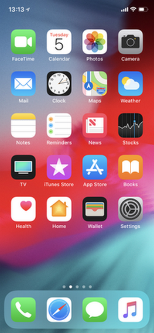

iOS 12
O iOS 12 é o décimo segundo e atual lançamento principal do sistema operacional para iOS desenvolvido pela Apple Inc. , sendo o sucessor do iOS 11 . Ele foi anunciado na Worldwide Developers Conference da empresa
em 4 de junho de 2018. É semelhante em estética ao iOS 11, mas contém
várias melhorias de desempenho e de vida útil da bateria e atualizações
de segurança, além de funcionalidades adicionais em aplicativos nativos. Foi lançado ao público em 17 de setembro de 2018.
|  iOS 12 rodando em um iPhone X |
Modelo de origem Fechado com componentes de código aberto
Lançamento inicial 17 de setembro de 2018
Último lançamento 12,2 (16E227) (25 de março de 2019 )
Última visualização 12,3 Beta 2 (16F5129d) (8 de abril de 2019 )
Tipo de kernel Híbrido ( XNU ) Licença Software proprietário com componentes de código aberto
Antecessor iOS 11
Sucessor iOS 13
Introdução e lançamento inicial
O iOS 12 foi apresentado por Craig Federighi no discurso de abertura da Conferência Mundial de Desenvolvedores da Apple em 4 de junho de 2018. A primeira versão beta do desenvolvedor foi lançada após a apresentação, com o primeiro beta público sendo lançado três semanas depois 25, 2018.
Atualizações
12.0.1
O iOS 12.0.1 foi lançado em 8 de outubro de 2018, como a primeira atualização para o iOS 12.
12.1
O iOS 12.1 foi lançado em 30 de outubro de 2018. A atualização incluiu
novos emojis, o recurso FaceTime do grupo, suporte a botões L3 / R3 para
controladores MFi, atualizações no aplicativo Measure e a capacidade de usar um eSIM no iPhone XS Max , iPhone XS e iPhone XR.
12.1.1
O iOS 12.1.1 foi lançado em 5 de dezembro de 2018.
12.1.2
O iOS 12.1.2 foi lançado em 17 de dezembro de 2018 e é uma atualização apenas para o iPhone. Os iPads e o iPod touch de 6ª geração continuaram a usar o iOS 12.1.1.
12.1.3
O iOS 12.1.3 foi lançado em 22 de janeiro de 2019 e apresentava
importantes correções de erros, corrigindo todas as explorações de
kernel conhecidas.
12.1.4
O iOS 12.1.4 foi lançado em 7 de fevereiro de 2019 e apresentava uma correção de bug importante no Group FaceTime.
12.2
O iOS 12.2 foi lançado em 25 de março de 2019 e continha um aplicativo News atualizado e 51 correções de segurança. Esta atualização também corrigiu o hífen e adicionou suporte para os AirPods de 2ª Geração.
Recursos do sistema
Performance
As otimizações de desempenho foram feitas para acelerar tarefas comuns em todos os dispositivos iOS compatíveis. Testes feitos pela Apple em um iPhone 6 Plus
mostraram aplicativos sendo lançados 40% mais rápido, o teclado do
sistema ativando 50% mais rápido e a câmera abrindo 70% mais rápido.
Tempo de tela
O Screen Time é um novo recurso do iOS 12 que registra o tempo que um usuário gastou no dispositivo. O recurso também exibe a quantidade de tempo que o usuário usou aplicativos específicos, a quantidade de tempo que o usuário usou determinadas categorias de aplicativos (como jogos), e o número de notificações que o usuário recebeu.
O Tempo de tela também fornece recursos de bloqueio para limitar o uso
de aplicativos (com limites de tempo) ou definir outras restrições, como
compras ou conteúdo explícito.
Ele substitui os Controles dos Pais no aplicativo Configurações do iOS,
mas também pode ser usado por adultos para limitar seu próprio uso. Esses recursos podem ser usados com ou sem uma senha. Sem definir uma senha, os limites podem ser ignorados facilmente, mas podem servir como um lembrete útil dos objetivos de uso.
Atalhos
Um aplicativo dedicado no iOS 12 permite que os usuários configurem
atalhos, ações automatizadas que o usuário pode solicitar ao Siri. Ele substitui o aplicativo Workflow adquirido pela Apple em março de 2017.
ARKit 2
O ARKit agora permite que os usuários compartilhem sua visão com outros dispositivos suportados pelo iOS 12. O ARKit 2 também permite rastreamento completo de imagens 2D e incorpora a capacidade de detectar objetos 3D.
CarPlay
O CarPlay agora pode executar aplicativos de navegação de terceiros.
iPad
Os aplicativos de memorandos de voz e estoques estão agora disponíveis para iPads.
O Control Center é separado do alternador de aplicativos no iPad e pode ser aberto com um deslize para baixo no canto superior direito. Além disso, os gestos no estilo do iPhone X são introduzidos em todos os iPads que executam o iOS 12.
Teclado
No iOS 12, o modo do trackpad (que permite ao usuário mover livremente o cursor) é ativado pressionando a barra de espaço em dispositivos sem o 3D Touch.
Switcher
Para dispositivos com navegação por gestos e sem botão inicial ( iPhone X
e posterior), os usuários agora podem forçar a saída de aplicativos
deslizando da parte inferior da tela (sem precisar pressioná-los quando
estiver no alternador de aplicativos).
Recursos do aplicativo
Mensagens
Mensagens no iOS 12 introduz um novo tipo de Animoji personalizável chamado "Memoji", que permite ao usuário criar um personagem 3D de si mesmo. A Apple também apresentou Koala, Tiger, Ghost e T-Rex Animojis. Além disso, a Apple adicionou novos efeitos de texto e GIF semelhantes aos encontrados em outros aplicativos de mídia social.
FaceTime
O FaceTime
ganha suporte para Animoji e Memoji, assim como novos efeitos de texto e
GIF semelhantes aos encontrados em outros aplicativos de mídia social e
no aplicativo Mensagens.
O iOS 12.1, lançado em 30 de outubro de 2018, adiciona a capacidade de incluir até 32 pessoas em uma conversa no FaceTime. Este recurso é suportado apenas com vídeo por dispositivos com o chip Apple A8X ou Apple A9 ou posterior; só é suportado para áudio no iPhone 5S , iPhone 6 e iPhone 6 Plus e não está disponível no iPad Mini 2 , iPad Mini 3 e iPad Air. O FaceTime do grupo foi desativado em 28 de janeiro de 2019 devido a um
bug de software que permitia que as chamadas fossem atendidas pelo
chamador em vez do destinatário, permitindo que o vídeo e o áudio fossem
transmitidos, a menos que a chamada fosse recusada. A funcionalidade foi restaurada em 7 de fevereiro de 2019 com o lançamento do iOS 12.1.4.
O FaceTime de grupo permanece desativado em dispositivos que executam
versões anteriores do iOS 12. (Ele nunca esteve disponível em versões
anteriores ao iOS 12.)
Meça
O Measure é um novo aplicativo AR nativo que permite ao usuário fazer medições. Ele também funciona como um nível, um recurso que foi originalmente empacotado como parte do aplicativo Compass.
Fotos
A Apple Photos foi totalmente redesenhada com quatro novas abas, incluindo "Fotos", "Para você", "Álbuns" e "Pesquisa". A nova guia "Para você" substitui a guia "Memórias" encontrada anteriormente no iOS 11
e faz recomendações de compartilhamento, cria colagens de vídeo curtas,
sugestões de edição de fotos, bem como fotos destacadas de um dia
específico. Enquanto as abas "Fotos" e "Álbuns" receberam apenas algumas mudanças
estéticas, a guia "Pesquisar" inclui novos recursos de Inteligência
Artificial e Aprendizado de Máquina que mostram as fotos do usuário por
local e categorias (por exemplo, animais, carros, objetos).
Notificações
As notificações agora são agrupadas por aplicativo e têm um botão
"gerenciar" para desativar as notificações desse aplicativo ou para
entregá-las discretamente a partir do centro de notificações sem
precisar acessar o aplicativo Configurações.
Não perturbe
O recurso Não perturbe agora possui um recurso chamado "Não perturbe
durante o horário de dormir" para enviar automaticamente notificações
para o histórico, enviar chamadas para o correio de voz (pode ser
alterado para Favoritos / Chamadas repetidas) e ter uma tela mais escura
para auxiliar o sono. No entanto, se o usuário tocar na tela (ou quando o tempo de ativação do usuário passar), as notificações serão exibidas. Quando a opção Não perturbe estiver ativada, uma nova notificação será
exibida, informando que as notificações e chamadas serão silenciadas
quando ativas.
Memorandos de Voz e Stocks
Os aplicativos de memorandos e estoques de voz estão agora em iPads. Os memorandos de voz e as ações tiveram uma atualização de design e o último integrou o Apple News .
Livros da Apple
O iBooks foi renomeado como Apple Books
, e o aplicativo foi redesenhado, com cinco novas guias, incluindo
"Reading Now", "Library", "Book Store", "Audio Books" e "Search". O novo design do aplicativo é semelhante ao da Apple Music e foi elogiado por sua simplicidade em permitir que os usuários naveguem facilmente em sua biblioteca de livros.
Safari
O Safari recebe uma atualização para o Intelligent Tracking Prevention. Isso inclui um recurso que permite ao usuário desabilitar os botões de mídia social "como" e "compartilhar".
Mapas
O Apple Maps
foi reconstruído a partir do zero, contando com dados de mapas
primários, em vez de usar dados de mapas fornecidos por terceiros. Isso permite direções e previsões mais precisas nas rotas mais rápidas.
Problemas
"Hyphen" bug
Se um usuário acionar a pesquisa do Spotlight e usar a conversão de voz para texto, repetidamente "hífen", o iPhone falhará.
Emoji de bandeira de arco-íris
Depois que um emoji de bandeira do arco - íris apareceu com um sinal interdito no Twitter , vários usuários acusaram a Apple de encorajar atitudes anti-LGBT . No entanto, a Emojipedia esclareceu que isso ocorre quando um usuário twita os dois emojis juntos e não é um recurso pretendido. Isso pode ser usado com outros emojis também.